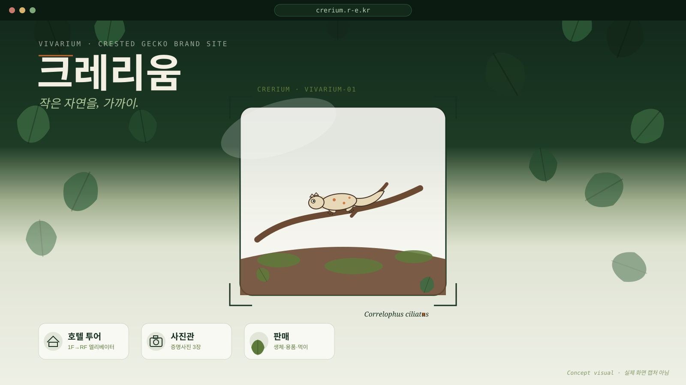

1. Frontend / Motion
React + Vite + TypeScript 기반 SPA이며, Anime.js v4로 Hero의 잎 파티클, 섹션별 스크롤 리빌, 호텔 엘리베이터 투어 연출 등 모션을 구현했습니다. 브라우저 기본 스크롤 위에 Hero만 sticky 무대를 올리고 scroll 이벤트로 동기화하는 방식을 써서, 스크롤 가로채기 없이 자연스러운 모션을 만들었습니다.
친구가 운영하는 비바리움·크레스티드 게코 펫샵의 브랜드 홈페이지를 기획부터 프론트엔드/백엔드 개발, 배포, 운영까지 혼자 진행한 사이드 프로젝트입니다. 무료 도메인과 개인 미니PC 서버로 직접 호스팅하며 실제 서비스로 운영하고 있습니다.

Crerium(크레리움)은 친구가 운영하는 파충류(크레스티드 게코) 전문 펫샵의 브랜드 홈페이지입니다. 단순 소개 페이지가 아니라, 타이포그래피·사진 조각이 스크롤과 포인터 움직임에 정교하게 반응하는 모션그래픽형 사이트로 기획했고, 실제 매장·개체 사진을 소재로 "잎이 갈라지며 비바리움이 드러나는" Hero 연출을 중심에 두었습니다.
저는 사이트 기획, React + Anime.js 기반 모션 구현, FastAPI 백엔드, 배포 인프라, 운영까지 전 과정을 혼자 맡았습니다. 방문자에게 보여지는 소개·판매 카탈로그 화면뿐 아니라, 친구가 직접 공지와 판매 품목을 관리할 수 있는 관리자 페이지, 유튜브 채널 신규 영상을 자동으로 수집하는 백그라운드 작업까지 포함해 하나의 운영 가능한 서비스로 완성하는 데 집중했습니다.
무료 도메인(r-e.kr)과 집에 있는 미니PC를 서버로 써서 Docker Compose로 전체 스택을 올리고, Caddy가 HTTPS 발급까지 자동으로 처리하도록 구성해 비용 없이 실제로 운영 중입니다.
"작은 조각들이 모여 하나의 자연이 된다"는 기억 문장을 잡고, Hero 전개·섹션 구성·색상 토큰·금지 연출 목록까지 기획 문서로 정리한 뒤 구현에 들어갔습니다.
잎 파티클이 스크롤에 맞춰 갈라지며 비바리움이 드러나는 Hero, 영수증이 찢어지듯 열리는 공지 카드, 유리문이 닫히는 연출 등 스크롤·포인터 반응형 모션을 구현했습니다.
공지/팝업, 판매 품목, 매장 정보를 친구가 직접 수정할 수 있는 관리자 페이지와 인증(첫 로그인 시 아이디·비밀번호 강제 변경 포함)을 구현했습니다.
Docker Compose로 DB·API·수집기·웹 서버를 구성하고, 개인 미니PC에 무료 도메인으로 직접 호스팅하며 서비스를 운영하고 있습니다.
React + Vite + TypeScript 기반 SPA이며, Anime.js v4로 Hero의 잎 파티클, 섹션별 스크롤 리빌, 호텔 엘리베이터 투어 연출 등 모션을 구현했습니다. 브라우저 기본 스크롤 위에 Hero만 sticky 무대를 올리고 scroll 이벤트로 동기화하는 방식을 써서, 스크롤 가로채기 없이 자연스러운 모션을 만들었습니다.
FastAPI + PostgreSQL(Alembic 마이그레이션) 기반으로 공지·판매 품목·매장 정보 API와 관리자 인증을 구현했습니다. 관리자 경로는 추측하기 어려운 값으로 환경변수화하고, 첫 로그인 시 아이디·비밀번호 변경을 강제해 기본 계정 그대로 운영되는 상황을 막았습니다.
별도 collector 서비스가 매일 유튜브 채널 RSS를 확인해 신규 영상을 DB에 자동 적재합니다. db·api·collector·web 네 개 컨테이너를 Docker Compose로 묶고, web 컨테이너의 Caddy가 리버스 프록시와 HTTPS 인증서 발급을 자동으로 처리하도록 구성해 개인 서버에서도 운영 부담 없이 돌아가게 했습니다.
초기 기획은 비바리움 사진 한 장을 확대·이동하는 몰입형 Hero였는데, 평면 사진을 확대하는 것만으로는 깊이가 생기지 않고 그냥 "사진 확대"처럼 보였습니다.
방향을 바꿔 실제 잎 사진 수백 장을 앞·가운데·뒤 세 층으로 겹겹이 배치하고, 스크롤에 맞춰 중심부터 갈라지며 비바리움이 드러나는 구조로 재설계했습니다. 사진 한 장이 아니라 레이어가 갈라지는 과정 자체를 모션으로 만들어 깊이감을 살렸습니다.
채널에 새 영상이 올라올 때마다 수동으로 사이트에 등록해주는 건 비개발자인 친구 입장에서 번거로운 운영 부담이었습니다.
API 컨테이너와 분리된 collector 컨테이너를 따로 두고 RSS 기준으로 하루 한 번 자동 수집하도록 구성했습니다. API 서비스 부하와 무관하게 독립적으로 스케줄링할 수 있어 운영이 단순해졌습니다.
친구가 공지·판매 품목·매장 정보를 직접 고칠 수 있어야 했지만, 그만큼 관리자 페이지 노출과 계정 보안도 신경 써야 했습니다.
관리자 경로 자체를 환경변수로 추측하기 어렵게 바꾸고, 첫 로그인 시 아이디·비밀번호 변경을 강제하는 흐름을 추가해 기본 계정이 그대로 노출되는 상황을 막았습니다.
상용 호스팅이 아닌 집 미니PC와 무료 도메인 조합이라, HTTPS 인증서 발급·갱신과 DB·업로드 이미지(media 볼륨) 백업까지 직접 챙겨야 했습니다.
Caddy에 도메인 주소만 넘기면 인증서를 자동으로 발급·갱신하도록 맡기고, pgdata· media 두 개의 Docker 네임드 볼륨만 백업하면 되도록 운영 상태를 단순하게 정리했습니다.
잎 파티클이 갈라지며 비바리움이 드러나는 연출을 Anime.js와 scroll 동기화로 구현했습니다.
공지/팝업, 판매 품목, 매장 정보를 비개발자도 직접 관리할 수 있는 관리자 페이지를 구현했습니다.
RSS 기반 daily collector로 채널 신규 영상을 자동으로 적재합니다.
db·api·collector·web을 한 번에 띄우고, Caddy가 HTTPS 발급까지 자동으로 처리하도록 구성했습니다.
상용 호스팅 비용 없이 개인 미니PC 위에서 실제 서비스로 운영 중입니다.
2026년 10월 말 첫 커밋 이후 기획부터 구현, 배포까지 마치고 실제 도메인(crerium.r-e.kr)으로 운영 중입니다. 친구가 관리자 페이지에서 공지와 판매 품목을 직접 관리하고 있고, 유튜브 신규 영상도 별도 요청 없이 자동으로 올라옵니다.
친구는 더 이상 블로그나 SNS 링크를 돌려 안내하지 않고, 하나의 브랜드 홈페이지에서 서비스 소개·판매 카탈로그· 유튜브 영상·오시는 길을 한 번에 안내할 수 있게 되었습니다. 공지나 상품 정보가 바뀌어도 개발자 없이 관리자 페이지에서 직접 갱신할 수 있습니다.
기획부터 개발, 배포, 운영까지 혼자 맡으면서 "예쁜 모션"보다 친구가 실제로 계속 쓸 수 있는 운영 구조가 더 중요하다는 걸 느꼈습니다. 관리자 보안, 자동화된 유튜브 수집처럼 겉으로 잘 드러나지 않는 부분이 오히려 운영 부담을 줄이는 핵심이었습니다.
이후에는 분양·예약 신청 이력 관리, 방문자 통계, 업로드 이미지 CDN 캐시 전략까지 확장해 보고 싶습니다.
사이트가 React SPA라 정적 스크린샷 대신, Hero 기획(잎이 갈라지며 비바리움이 드러나는 연출)과 서비스 구성을 재구성한 컨셉 일러스트입니다.